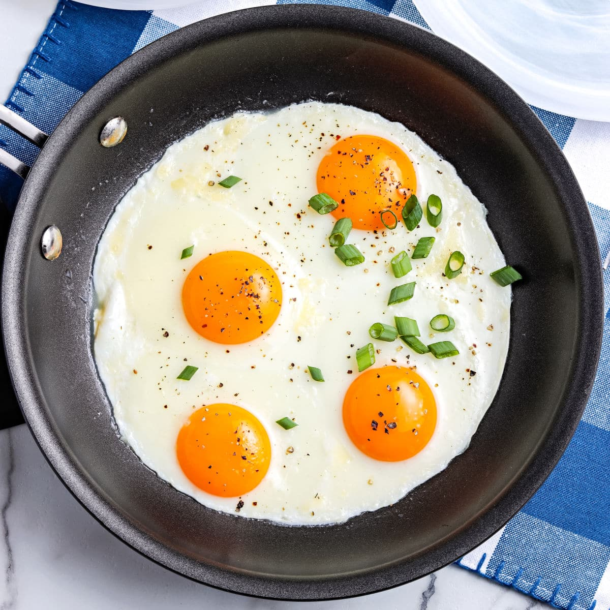

Sunny side up eggs

Recipe
This simple recipe is a breakfast classic, consisting of 2 or more eggs or however many you like!
Using a non-stick pan with either butter, olive oil spray placed in the pan, heated up and simply cracked in
until its cooked.
You can also add in egg whites to increase the protein of the meal.
Ingredients
- 2 or more eggs
- Butter or olive oil spray
- Seasoning: salt & pepper
Steps
- Preheat a pan to a high temperature
- Add in butter to the pan
- Once the butter has melted crack in however many eggs you want
- Cook until the egg whites change from being translucent to white
- Add more egg whites for added protein!
- Serve with seasoning
Home